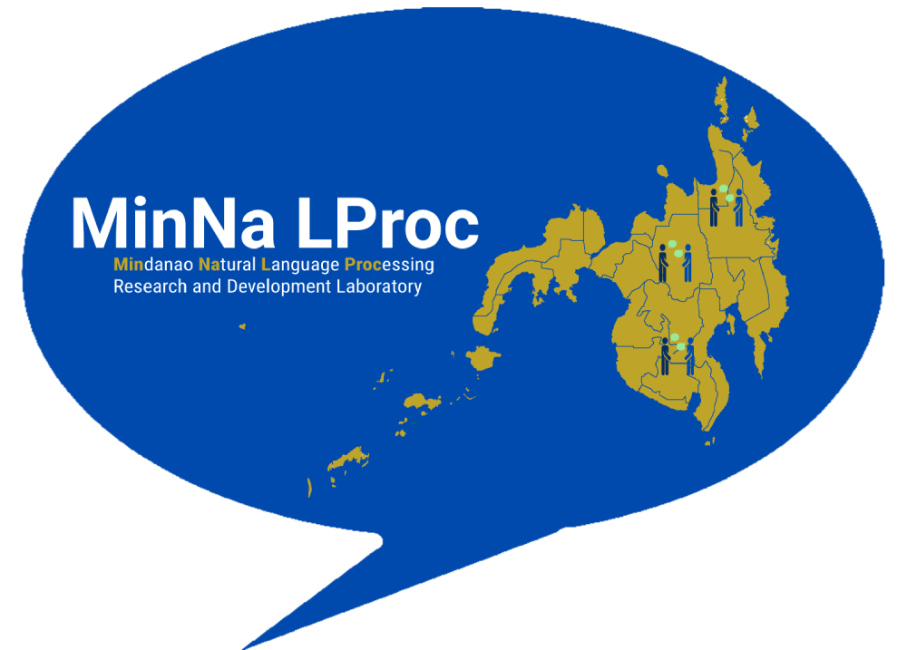

MinNa LProc secures funding from DOST-PCIEERD
By: Aurora Cristina A. Manseras
Posted on November 1, 2021

The Mindanao Natural (MinNa) Language Processing (LProc) Research and Development Laboratory, with the University of the Immaculate Conception (UIC) as its implementing agency, was granted funding support by the Department of Science and Technology – Philippine Council for Industry, Energy, and Emerging Technology Research and Development (DOST–PCIEERD).
A Memorandum of Agreement (MOA) was signed between UIC President Sr. Marissa R. Viri, RVM and DOST–PCIEERD Executive Director Dr. Enrico C. Paringit on September 23, 2021. The grant, amounting to P5,000,000.00, will be directed towards intensifying research and development works to help preserve and protect endangered languages in the Philippines.
The MinNa LProc laboratory will be equipped with high-end equipment to enable Mindanao Natural Language Processing (NLP) researchers to conduct research works focusing on three Mindanao languages, namely Manobo, Mansaka, and Kalagan.
Read the full story here.